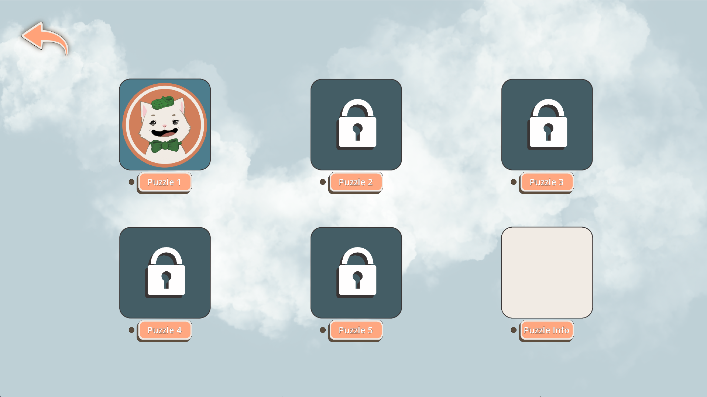
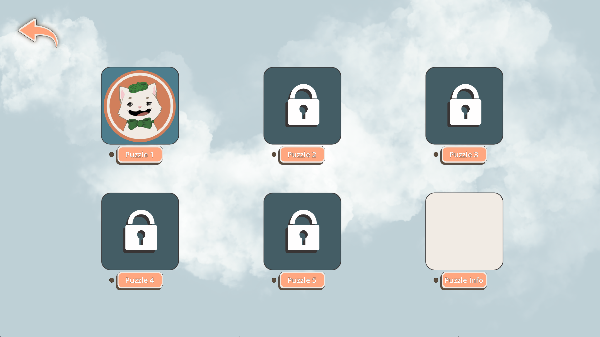

˗ˏˋ Python ´ˎ˗
Lorcana Library
Developed a Lorcana TCG Library for Set 1: The First Chapter.
The main feature of this library is the filtering system, allowing users to search for cards by various categories such as Ink Color, Ink Cost, Keywords, and more. Upon searching, the library displays all relevant cards matching the user's criteria. Additionally, the library includes a Lore Counter feature, enabling players to track their scores and race to gain 20 points/lore. For those who wants more of an understanding of the game mechanics, a detailed Game Rules section is available.
˗ˏˋ HTML + CSS ´ˎ˗
âStudio Grubliâ
Restaurant Menu inspired by some of the delicious foods in Studio Ghibli. Enjoy a little sneak peek! 🍴
Final Project for the HTML course on Codedex and used a little bit of CSS to complete.
Personal Website
I envisioned my personal website as a virtual sketchbook not only to showcase my creative hobbies, but also underscore my proficiency in design, art, and the craftsmanship of coding it from scratch. My goal was to merge the realms of coding and artistry, crafting a digital experience that captivates with its blend of functionality and creativity.
˗ˏˋ Godot + Figma ´ˎ˗
Cats in Crocs
Senior Design Project
"Cats in Crocs" is an immersive puzzle game designed to teach the 10 Usability Heuristics Laws in a fun and engaging way. Hop on this journey as you step into a whimsical world where cats wears crocs on their heads. Guided by a friendly neighborhood wizard in a croc, where you'll navigate through a series of puzzles designed to learn each usability law. Developed using Godot Engine and GDScript for seamless functionality, and brought to life with captivating designs crafted using Figma and Procreate.
Meet the lovely Cats in a Croc!
We have the lovely friendly neighborhood wizard, Jewel, Pierre, Bella, and the old man.
All of these characters were drawn by me using Procreate. The paw was created by me using Figma.


This is the Main Screen of the game, so this is what you'll see when you first open it. The second picture is the Puzzle Select page where you can navigate to different levels as you unlock each one. This is an earlier design when we started out with 5 puzzles.
 

Some of the Puzzles I designed using Figma
We originally started with 5 puzzles and later decided to do a puzzle for each Usability Law. You can see the design slightly change to incorporate all puzzle levels. The user is supposed to build upon each law and apply them to each "project" they are assigned. You are then rewarded with a Jibbit to add to your own personal croc.


Demo of Cats in Crocs